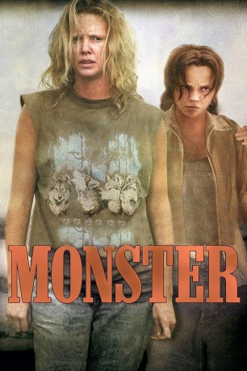

#894 Monster
Auszeichnungen: 1 Oscars gewonnen 1 GoldenGlobes gewonnen
 
 IMDB-Wertung: 7.3 / 10
IMDB-Wertung: 7.3 / 10  Metascore: 74
Metascore: 74 
Als die Prostituierte Aileen eine Frau kennenlernt in die sie sich verliebt will sie mit der Prostitution aufhören, erschießt ihren letzten Freier aber aus Notwehr und flüchtet vor der Polizei. Aus Verzweiflung, dass sie keinen Arbeitsplatz finden kann, begeht sie immer wieder Morde und die Polizei macht sich auf die Suche nach einem Serienmörder... Beruht auf wahren Begebenheiten!
Jahr: 2003
Dauer: 109 Minuten
FSK: 16
Land: USA Studio: Newmarket FilmsTonspuren: DTS - ,
Untertitel:
Auflösung: 720p (1280x688) Größe: 6717 MB
Genre: Biographie, Krimi, Drama, Thriller
Regisseur:  Patty Jenkins
Patty Jenkins
Drehbuch: Patty Jenkins
Soundtrack: BT
Darsteller:
 Charlize Theron als Aileen
Charlize Theron als Aileen Christina Ricci als Selby
Christina Ricci als Selby Bruce Dern als Thomas
Bruce Dern als Thomas Lee Tergesen als Vincent Corey
Lee Tergesen als Vincent Corey Annie Corley als Donna
Annie Corley als Donna Pruitt Taylor Vince als Gene / Stuttering John
Pruitt Taylor Vince als Gene / Stuttering John Marco St. John als Evan / Undercover John
Marco St. John als Evan / Undercover John Marc Macaulay als Will / Daddy John
Marc Macaulay als Will / Daddy John Scott Wilson als Horton / Last John
Scott Wilson als Horton / Last John Rus Blackwell als Cop
Rus Blackwell als Cop Tim Ware als Chuck
Tim Ware als Chuck Brett Rice als Charles
Brett Rice als Charles Kane Hodder als Undercover Cop
Kane Hodder als Undercover Cop- Bubba Baker als Cubby
 Jim R. Coleman als Newscaster
Jim R. Coleman als Newscaster- Chandra Leigh als Cute Teenage Attendant
- Robb Chamberlain als Prosecutor , uncredited
- Ed Donovan als State Prison Guard , uncredited
- Khris Gibston als Prosecuting Attorney , uncredited
- Stephan Jones als Lawyer
- Kaitlin Riley als Teenage Aileen
- Cree Ivey als 7-Year-Old Aileen
- Catherine Mangan als Justy
- Magdalena Manville als Bar Lap Girl
- T. Robert Pigott als Bartender
- Romonda Shaver als Employment Agent
 Glenn R. Wilder als Restaurant Manager
Glenn R. Wilder als Restaurant Manager- Elaine Stebbins als Wife at Accident
- Christian Stokes als Undercover Cop
- Lyllian Barcaski als Bar Girl
- Nonalee Davis als Bar Girl
- Al als Himself, at the Last Resort
- Cannonball als Himself
- Chad Vaccarino als Trevor
- Gene R. Stephenson als Judge
- Jesse Stern als Skate Rink Attendant
- Bill Boylan als Police Chief
- Lori McDonald als Attendant
 Adam Brown als Attendant
Adam Brown als Attendant
Datei: X:\2003(G-M)\Monster (2003, FSK16, 1280x688).mkv seit 13.04.2015
Festplatte: HD 2003-2004-2005(A-F)
 Es gibt insgesamt 33 Filme in der Gruppe '2003(G-M)'
Es gibt insgesamt 33 Filme in der Gruppe '2003(G-M)'